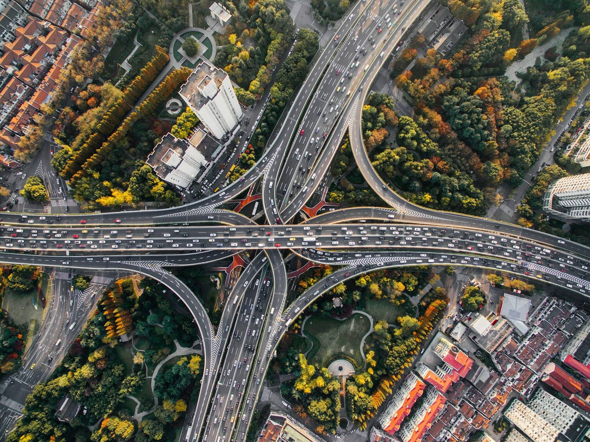

PTZ dome
Vanta PTZ
One camera that covers a whole junction: pans the full circle, zooms in on a plate a block away, and follows what moves.
- Optical zoom
- 40×
- Pan
- 360° endless
- Resolution
- 4K
- Tracking
- Auto
Drag to pan · scroll or use the slider to zoom
